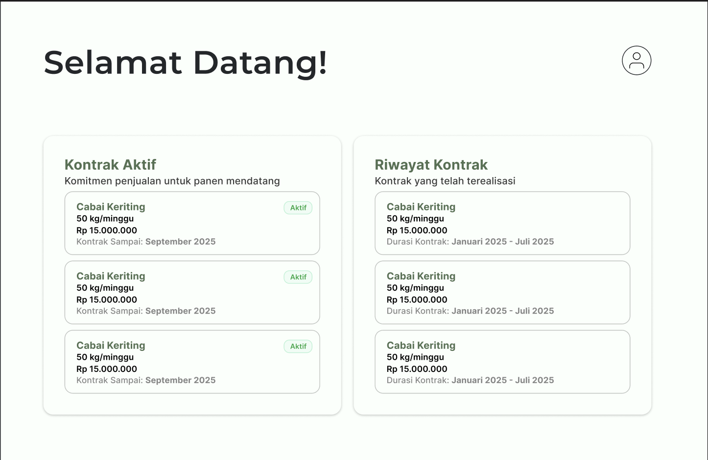
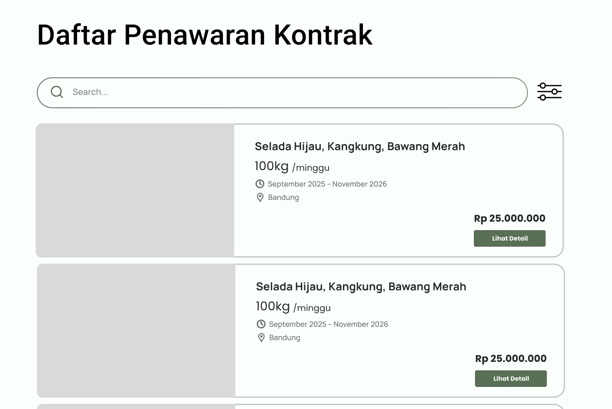

01 · Problem The Challenge
Independent urban hydroponic hobbyists frequently face unsold harvests, while commercial buyers constantly struggle with inconsistent local supplies. The challenge was to transform these fragmented urban farmers into a unified, commercial-grade supply chain. To achieve this, we needed to eliminate harvest waste and guarantee consistency across distributed cultivation sites.
02 · Solution The Approach
As Product Owner and Lead Backend Developer, I orchestrated the transition from a manual concierge offering to a fully interactive digital prototype. While the high-fidelity UI demonstrates the intended Panen Pintar Dashboard, I simultaneously architected the future high-performance Laravel backend and IoT infrastructure.
Once fully implemented and deployed to GCP, this planned architecture will seamlessly ingest real-time environmental telemetry from dispersed hydroponic sensors. The design specifies using Python data mining scripts to generate predictive harvest timelines, integrated via RESTful APIs to provide automated standard operating procedures directly matching our commercial market absorption objectives.

Panen Pintar Dashboard prototype

IoT Telemetry Tracking
03 · Architecture System Blueprint
Laravel IoT Backend
Engineered a robust Laravel API acting as the central ingestion point for high-frequency environmental telemetry originating from distributed sensors.
Python Data Mining
Developed specialized Python scripts that process real-time sensor streams to calculate accurate predictive harvest timelines and expected commercial yields.
Unified Ecosystem
Supported the core ecosystem pillars: centralized planting schedules driven by market demand, standardized crop inputs, and guaranteed commercial absorption.
04 · Results The Outcome
The high-fidelity UI prototype successfully secured stakeholder buy-in by visually proving the platform's commercial viability. Meanwhile, the comprehensively documented system architecture ensures a clear, scalable roadmap for the future integration of IoT hardware, the Laravel backend, and eventual Google Cloud Platform deployment.